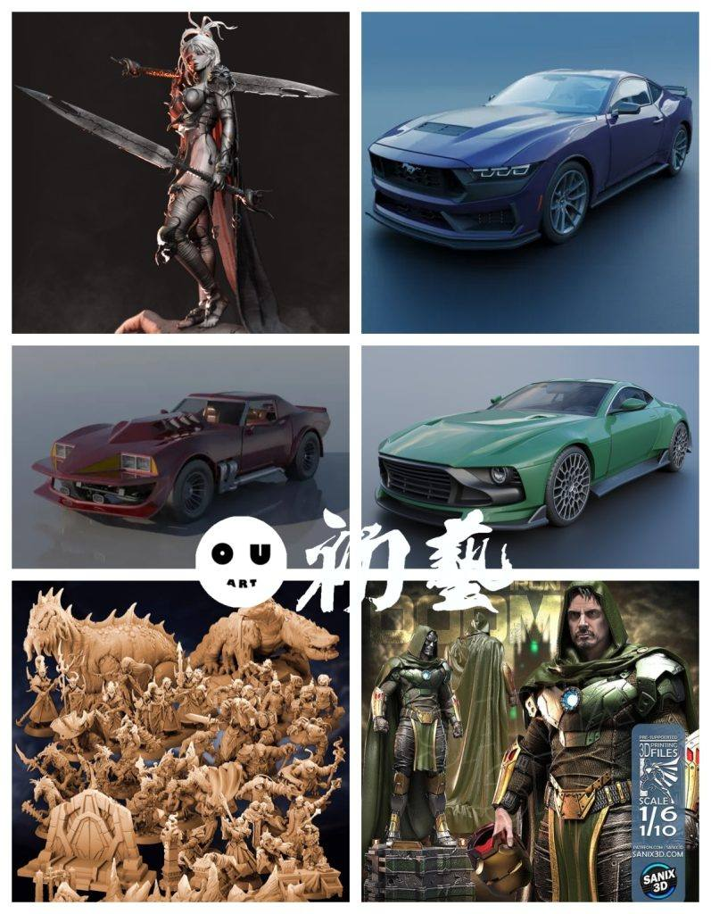
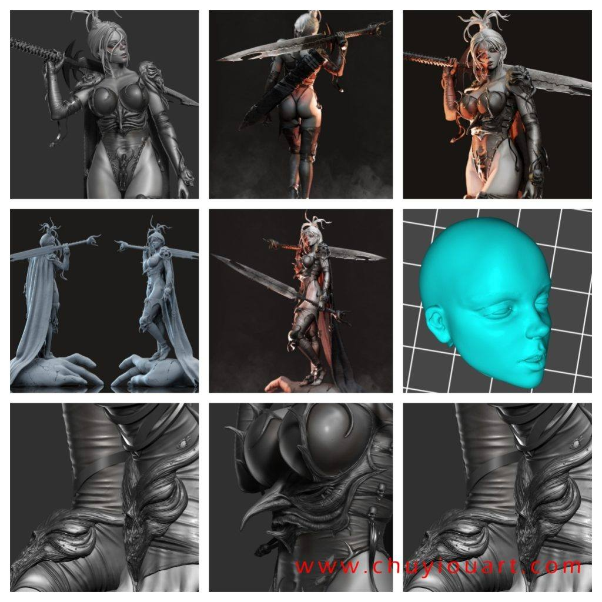
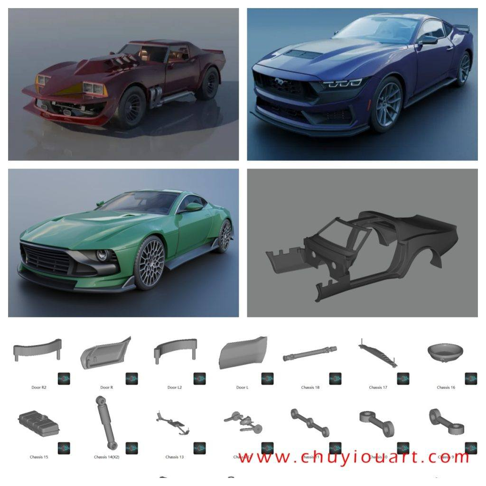
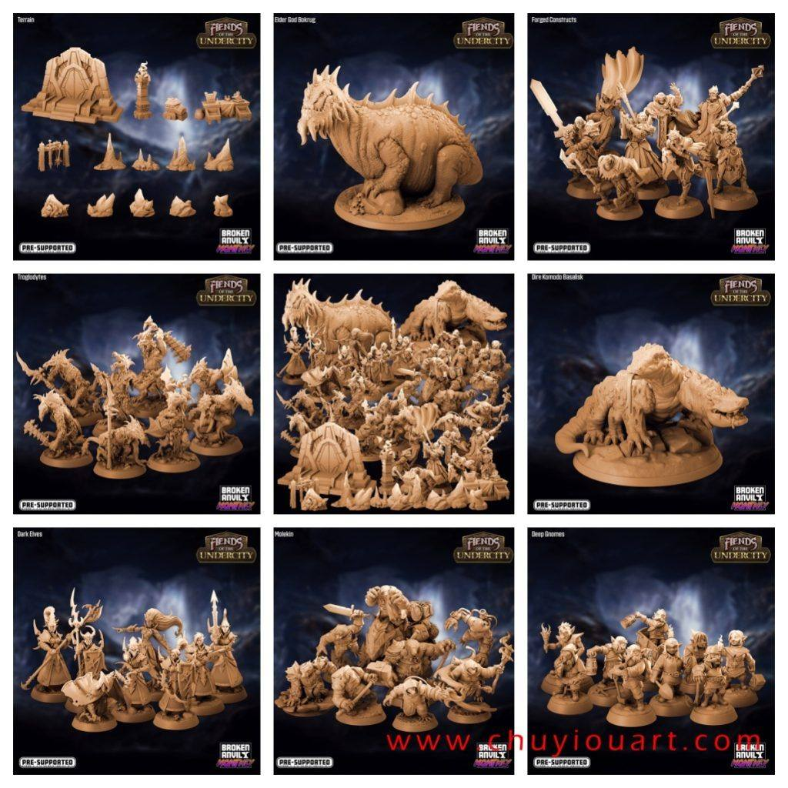
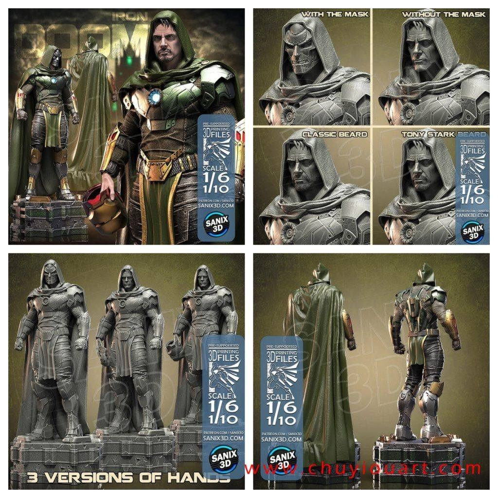

模型分享
12月09日STl图纸文件分享

1.女战士Warrior_Lady，很不错的精度，造型和场景都很好。

2.三辆车模，有多尺寸可选，分件很细，使用场景多样，值得收藏。

3.地下城恶魔，这一套内容不少，文件有分的比较细致，具体可以直接看图。

4.毁灭博士，离上映不远，电影版盲猜会以托尼在多重宇宙中的另一个身份出现，很期待的反派，模型本身素质还行。

链接:
https://pan.baidu.com/s/1zldncIDHWQ_GnxfCbPyV_A 提取码: 1mp5
以上内容仅供个人使用（非商用）
ONLY for PERSONAL (NON-COMMERCIAL) use.
加群获得更多免费模型！

可加微信备注“模型资源”入群：chuyimeishu01